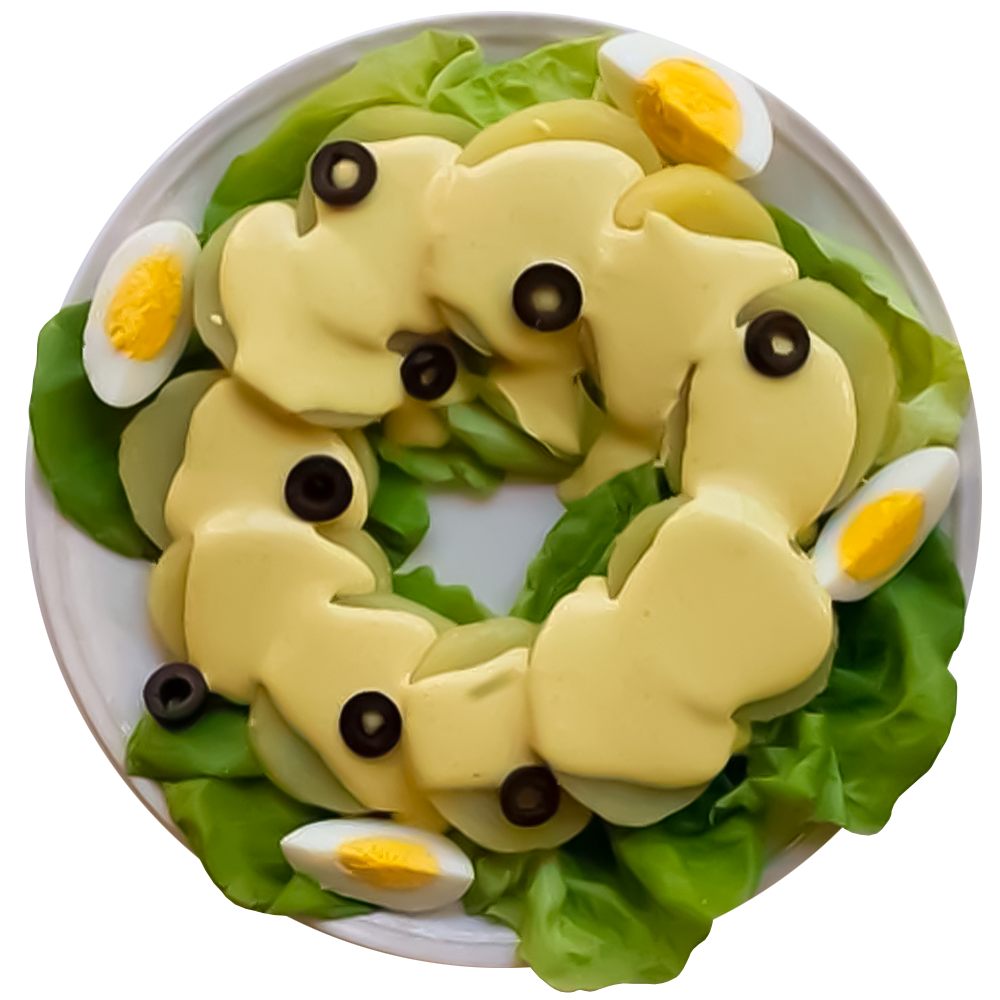
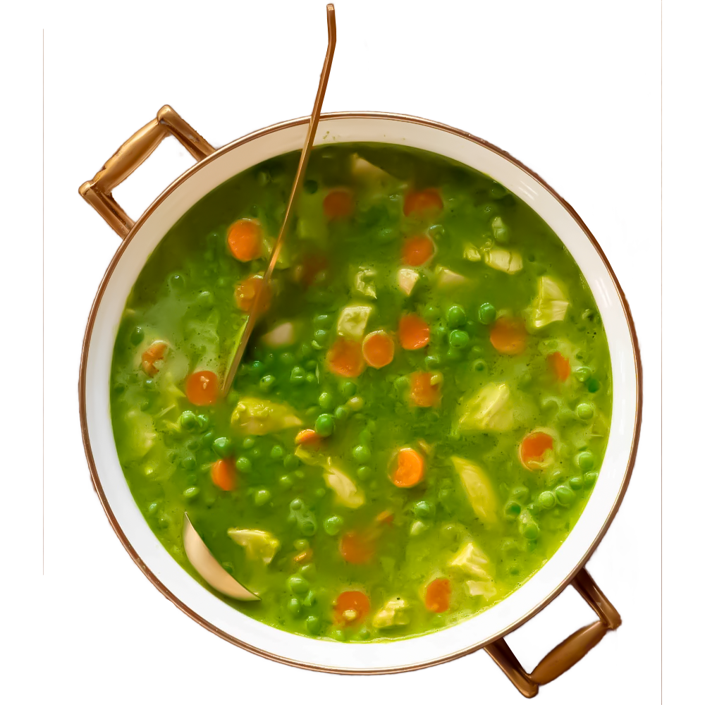
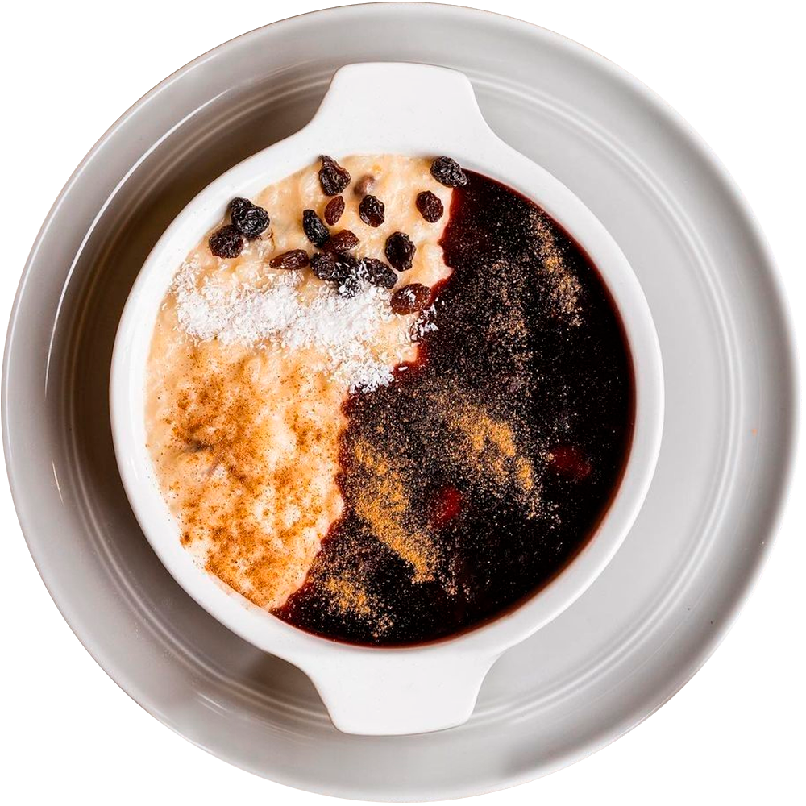
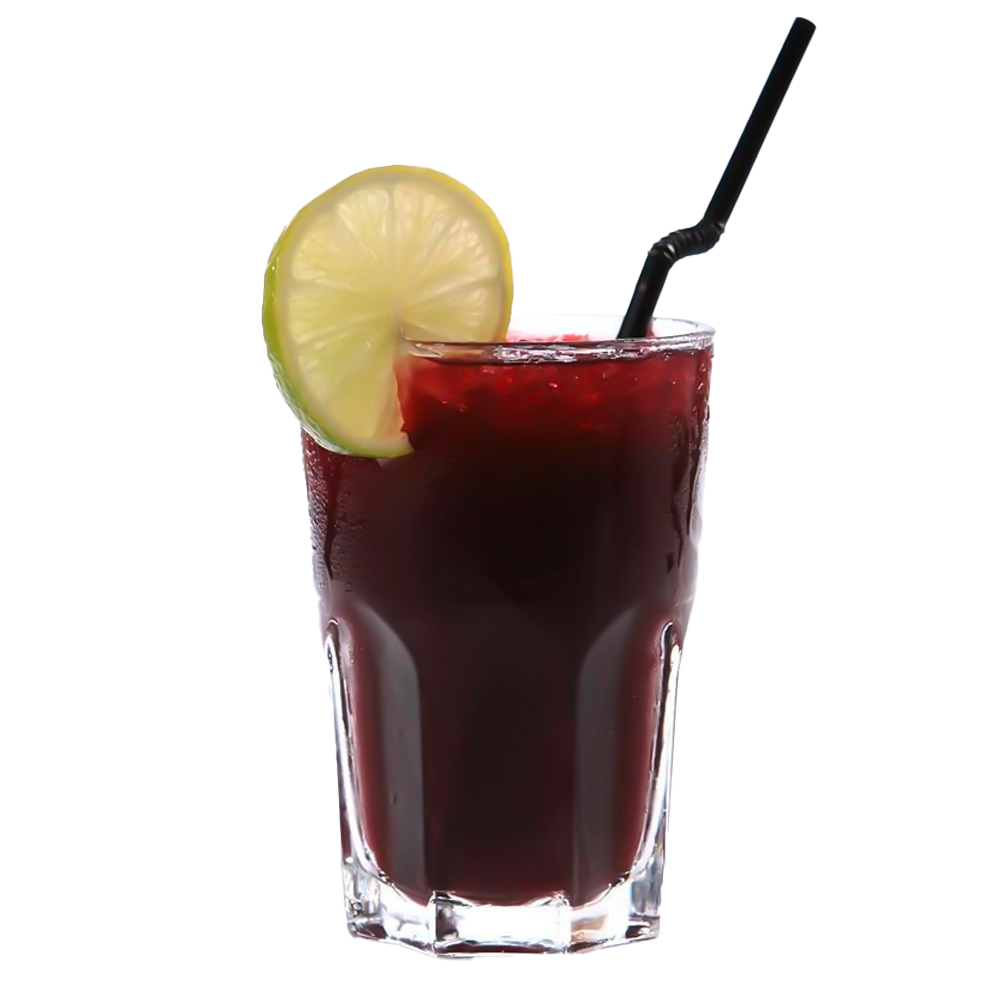

NUESTRO MENÚ

Entradas Criollas: Un viaje de sabor desde el primer bocado
En Punto & Criollo, entendemos que una buena comida empieza desde la primera impresión, por eso nuestras entradas criollas han sido cuidadosamente seleccionadas para abrir el apetito y ofrecer una muestra del sabor y tradición que caracteriza a la cocina peruana. Cada plato ha sido elaborado con ingredientes frescos y técnicas caseras que rescatan el auténtico sabor criollo, convirtiendo cada entrada en una verdadera experiencia gastronómica.

Sopas Criollas: Calor y tradición en cada cucharada
En Punto & Criollo, nuestras sopas tradicionales son una expresión del hogar peruano. Desde el sabroso aguadito, lleno de sabor y tradición, hasta el reconfortante caldo criollo, cada cucharada está pensada para brindar bienestar y rescatar recetas que han acompañado generaciones. Ideales para días fríos o simplemente para disfrutar de un sabor profundo y auténtico.

Menu Criollo: Sabores que Enamoran el Paladar
Nuestros platos de fondo son el alma de la cocina peruana. Ofrecemos una variedad irresistible de clásicos criollos como el olluquito, el lomo saltado y el ají de gallina. Cada preparación refleja nuestra pasión por los sabores intensos, los ingredientes frescos y la sazón casera. Este menú está pensado para quienes buscan una experiencia completa, llena de tradición, abundancia y sabor criollo del bueno.

Postres: Dulces con Sabor a Tradición
Los postres son más que un antojo: son una dulce tradición que honra nuestras raíces. Desde el infaltable arroz con leche y la mazamorra morada, hasta el clásico suspiro a la limeña, cada postre está preparado con esmero, siguiendo recetas caseras que evocan el calor del hogar. Nuestros dulces criollos son el complemento perfecto para finalizar una experiencia gastronómica llena de sabor peruano.

Bebidas Tradicionales: Refrescos que Acompañan con Sabor
Nada mejor que una bebida típica para acompañar un buen plato criollo. En Punto & Criollo ofrecemos desde la refrescante chicha morada, hecha con maíz morado, hasta el clásico emoliente caliente, ideal para días fríos. También contamos con maracuyá casero, limonada y gaseosas locales. Nuestras bebidas están pensadas para refrescar, hidratar y acompañar cada comida con el sabor natural y auténtico que nos representa.